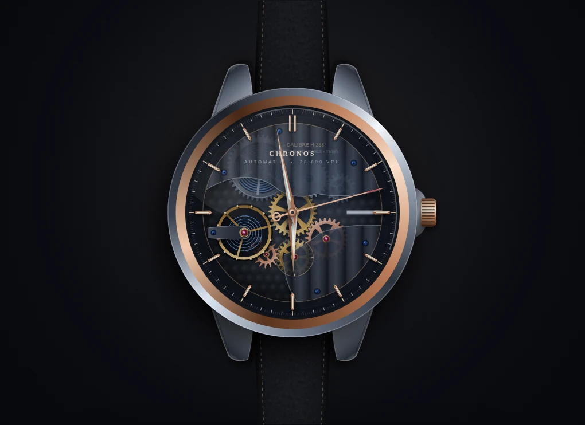

Calibre H-288
翻到錶背看機芯，轉一下光線，再打開聲音聽它走。Flip the watch over to see the movement, adjust the light, and turn on the ticking.
試玩機械錶Try the watch
以前打開 AI，我都在想「它可以做什麼？」這 48 小時玩下來，我反而想問「給它對的 skills，它到底還有什麼做不到？」I used to open AI and think, “What can it do?” After 48 hours of playing with Gemini, I’m asking, “With the right skills, what can’t it do?”
這兩個 Demo 都是我在 Google Antigravity 各丟一段 prompt 做出來的。I gave Google Antigravity one prompt for each of these two demos.
翻到錶背看機芯，轉一下光線，再打開聲音聽它走。Flip the watch over to see the movement, adjust the light, and turn on the ticking.
試玩機械錶Try the watch
轉一下指南針就抽目的地，連登機證都有。這輪抽到巴塔哥尼亞。Spin the compass and it picks a destination, boarding pass included. This spin landed on Patagonia.
Hydrogen、Neon、Carbon 我都玩了一輪。最戳我的是 Antigravity 裡可以讓 Neon 拆題、Hydrogen 動手，我可以繼續懶 😂I tried Hydrogen, Neon, and Carbon. My favorite part was handing off the work in Antigravity. Neon broke down the task, Hydrogen did the building, and I got to stay lazy 😂